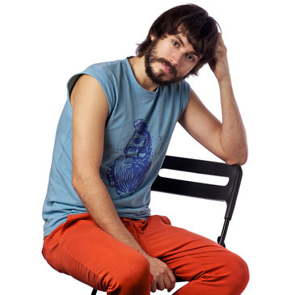
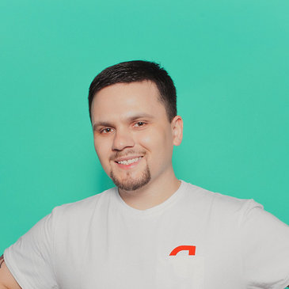
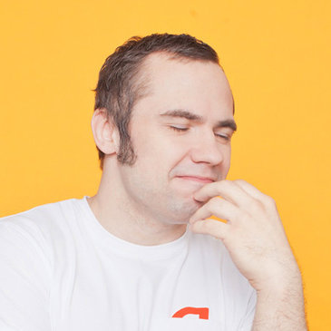
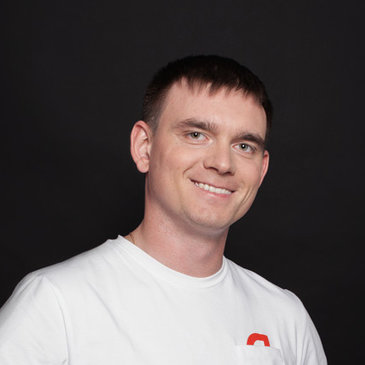
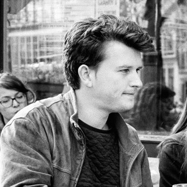
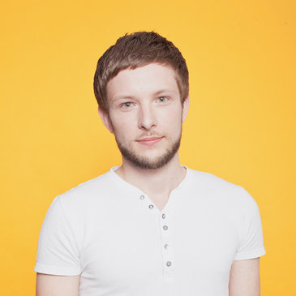
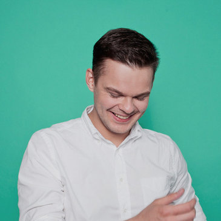

Lecture Schedule for the "Mobilization" Project
Filters
Select date
Select school
School of Interface Development
School of Mobile Development
School of Mobile Design
By lecturers
Dmitry Dushkin
Maxim Vasiliev
Sergey Berezhnoy
Andrey Morozov
Ivan Karev
Andrey Prokopyuk
Eduard Matsukov
Dmitry Skladnov
Roman Grigoriev
Alexey Shcherbinin
Alexey Makarov
Vladimir Tagakov
Maxim Khromtsov
Denis Zagaevsky
Dmitry Popov
Ilya Sergeev
Anton Ten
Nikolay Vasyunin
Sergey Kalabin
Sergey Tomilov
Darya Staritsyna
Rijshouwer Krijn
Treub Jonas
Andrey Gevak
Alexander Kondratiev
Yuri Podorozhny
Dmitry Moruz
Zhdan Filippov
-
2017.07.0709:00School of Interface DevelopmentAdaptive LayoutDmitry DushkinDmitry DushkinPhD in Technical Sciences, researcher at the Institute of Control Sciences of the Russian Academy of Sciences from 2008 to 2013. Joined Yandex.Images in 2014, was responsible for the mobile version and service performance growth. In 2016, moved to Yandex Data Factory, where he develops interfaces and web application design for B2B.Blue WhaleMoscow, Lenin St., 21
-
2017.07.0609:00School of Interface DevelopmentWorking with Touch User InputDmitry DushkinDmitry DushkinPhD in Technical Sciences, researcher at the Institute of Control Sciences of the Russian Academy of Sciences from 2008 to 2013. Joined Yandex.Images in 2014, was responsible for the mobile version and service performance growth. In 2016, moved to Yandex Data Factory, where he develops interfaces and web application design for B2B.Blue WhaleMoscow, Lenin St., 21
-
2017.07.0509:00School of Interface DevelopmentMultimedia: Browser CapabilitiesMaxim VasilievMaxim VasilievIn frontend development since 2007. Until 2013, when he joined Yandex, he worked as a technologist at Lebedev Studio and other companies.Blue WhaleMoscow, Lenin St., 21
-
2017.07.0409:00School of Interface DevelopmentNative Applications with Web TechnologiesSergey Berezhnoy

Sergey BerezhnoyWeb developer at Yandex since 2005. Worked on Search, Mail, Blog Search, Ya.ru, Images, Video. In addition, actively develops internal tools for building websites.Blue WhaleMoscow, Lenin St., 21 -
2017.07.0309:00School of Interface DevelopmentClient-side Optimization: Fundamentals and Best PracticesAndrey MorozovAndrey MorozovGraduated from the Radiophysics Faculty of Kyiv National University. Author of three patent applications. At Yandex since 2014, develops Yandex.Maps interfaces.Blue WhaleMoscow, Lenin St., 21
-
2017.07.0209:00School of Interface DevelopmentClient-side Optimization: Mobile Devices and ToolsIvan KarevIvan KarevGraduated from the Faculty of Computational Mathematics and Cybernetics (CMC) at Lomonosov Moscow State University. Has been in web programming since 2007. Started by building admin panels for a traffic filtering system, then online map interfaces for the Kosmosnimki project. At Yandex, started with Narod and Ya.ru, spent the last two years working on the main page. Currently specializes in performance: from server-side JS to client-side page load optimization.Blue WhaleMoscow, Lenin St., 21
-
2017.07.0109:00School of Interface DevelopmentSchool of Mobile DevelopmentSchool of Mobile DesignWeb Project InfrastructureAndrey Prokopyuk

Andrey ProkopyukIn 2008, became impressed with web development due to the speed of implementing ideas and ease of delivering them to users. At Yandex since 2014, develops the search results page. Enjoys complex tasks, interested in analytics, testing, and new ways to automate routine work.Red MooseMoscow, Lysogo St., 26 -
2017.05.3009:00School of Interface DevelopmentMobile Frontend Development ToolsAndrey ProkopyukAndrey ProkopyukIn 2008, became impressed with web development due to the speed of implementing ideas and ease of delivering them to users. At Yandex since 2014, develops the search results page. Enjoys complex tasks, interested in analytics, testing, and new ways to automate routine work.Red MooseMoscow, Lysogo St., 26
-
2017.05.2909:00School of Mobile DevelopmentJava Blitz (Part 1)Eduard MatsukovEduard MatsukovI develop applications for Android since 2010. In 2014, built a high-load financial application. At the same time, started learning AOP, introducing the language in production. In 2015, developed tools for Android Studio, that allow using aspectJ in their projects. At Yandex, works on the Auto.ru project.Red MooseMoscow, Lysogo St., 26
-
2017.05.2809:00School of Mobile DevelopmentGit & WorkflowDmitry Skladnov

Dmitry SkladnovGraduated from the IT Faculty of Moscow Technical University. At Yandex since 2015, develops the application Auto.ru for Android.Red MooseMoscow, Lysogo St., 26 -
2017.05.2709:00School of Mobile DevelopmentSchool of Interface DevelopmentSchool of Mobile DesignJava Blitz (Part 2)Eduard MatsukovEduard MatsukovI develop applications for Android since 2010. In 2014, built a high-load financial application. At the same time, started learning AOP, introducing the language in production. In 2015, developed tools for Android Studio, that allow using aspectJ in their projects. At Yandex, works on the Auto.ru project.Brown FoxMoscow, Putin St., 1
-
2017.05.2609:00School of Mobile DevelopmentMyFirstApp (Part 1)Roman GrigorievRoman GrigorievGraduated from Samara University. Develops applications for Android since 2010. At Yandex — since 2012. Leads the development of Yandex.Disk mobile clients.Brown FoxMoscow, Putin St., 1
-
2017.05.2509:00School of Interface DevelopmentSchool of Mobile DevelopmentSchool of Mobile DesignMyFirstApp (Part 2)Roman GrigorievRoman GrigorievGraduated from Samara University. Develops applications for Android since 2010. At Yandex — since 2012. Leads the development of Yandex.Disk mobile clients.Brown FoxMoscow, Putin St., 1
-
2017.05.2409:00School of Mobile DevelopmentViewGroupAlexey ShcherbininAlexey ShcherbininProfessional with deep knowledge in the graphic field Android and everything related to it. Enjoys non-standard tasks and solves them in the Yandex Browser mobile team.Brown FoxMoscow, Putin St., 1
-
2017.05.2309:00School of Mobile DevelopmentBackgroundAlexey MakarovAlexey MakarovGraduate of the Moscow Institute of Electronic Technology. Android- и Python-developer. In the Yandex.Browser mobile team since 2015.Brown FoxMoscow, Putin St., 1
-
2017.05.2209:00School of Mobile DevelopmentRecyclerViewVladimir TagakovVladimir TagakovDevelopment enthusiast for Android, at Yandex works on optimization and development of the Maps mobile application.Brown FoxMoscow, Putin St., 1
-
2017.05.2109:00School of Mobile DevelopmentService & BroadcastsAlexey MakarovAlexey MakarovGraduate of the Moscow Institute of Electronic Technology. Android- и Python-developer. In the Yandex.Browser mobile team since 2015.White GoatMoscow, Caesar St., 76
-
2017.05.2009:00School of Mobile DevelopmentDrawingAlexey ShcherbininAlexey ShcherbininProfessional with deep knowledge in the graphic field Android and everything related to it. Enjoys non-standard tasks and solves them in the Yandex Browser mobile team.White GoatMoscow, Caesar St., 76
-
2017.05.1909:00School of Mobile DevelopmentContent providerMaxim KhromtsovMaxim KhromtsovStudies in the graduate program at the Faculty of Computer Science of the Moscow Institute of Radioengineering, Electronics and Automation. Since 2005, develops applications (games, business applications) for mobile devices on platforms J2ME, Windows Mobile, Android, Symbian, participated in the development of web applications using Java EE. At Yandex since 2010, develops for mobile devices on platforms J2ME и Android.White GoatMoscow, Caesar St., 76
-
2017.05.1809:00School of Mobile DevelopmentSQL&SQLiteWhite GoatMoscow, Caesar St., 76
-
2017.05.1709:00School of Mobile DevelopmentFragments (Part 1)Denis ZagaevskyDenis ZagaevskyGraduated from the CMC Faculty of Lomonosov Moscow State University. Has been developing applications and games since 2011, in 2012 focused on mobile platforms Android и iOS. At Yandex develops applications for Android.White GoatMoscow, Caesar St., 76
-
2017.05.1609:00School of Mobile DevelopmentFragments (Part 2)Denis ZagaevskyDenis ZagaevskyGraduated from the CMC Faculty of Lomonosov Moscow State University. Has been developing applications and games since 2011, in 2012 focused on mobile platforms Android и iOS. At Yandex develops applications for Android.White GoatMoscow, Caesar St., 76
-
2017.05.1509:00School of Mobile DevelopmentMVP&CoDmitry PopovDmitry PopovGraduated from the PMT Faculty of Vyatka State University in 2012. At Yandex since 2015, develops media services products.White GoatMoscow, Caesar St., 76
-
2017.05.1409:00School of Mobile DevelopmentDebugging & PolishingIlya Sergeev

Ilya SergeevHas been developing applications for mobile platforms since 2009. During this time, participated in more than 30 completed projects for Android, iOS, и Windows Phone. At Yandex since 2015, develops KinoPoisk for Android и iOS.White GoatMoscow, Caesar St., 76 -
2017.05.1309:00School of Mobile DesignIdea, Research, Concept (Part 1)Anton TenAnton TenAt Yandex since 2014. Lead product designer for Translator, Schedules, and Video services.White GoatMoscow, Caesar St., 76
-
2017.05.1209:00School of Mobile DesignIdea, Research, Concept (Part 2)Anton TenAnton TenAt Yandex since 2014. Lead product designer for Translator, Schedules, and Video services.White GoatMoscow, Caesar St., 76
-
2017.05.1109:00School of Mobile DesignSpecifics of Mobile Interface DesignNikolay VasyuninNikolay VasyuninJoined Yandex in 2014. Product designer in the company's music services, member of the Yandex.Radio development team.White GoatMoscow, Caesar St., 76
-
2017.05.1009:00School of Mobile DesignProduct and PlatformSergey KalabinSergey KalabinJoined the company as a mobile app designer in 2013. Spent three years working on Yandex music services, now leads design for the Turkish direction. Believes that a designer should be distinguished by a love for people.White GoatMoscow, Caesar St., 76
-
2017.05.0909:00School of Mobile DesignThe Nature of Operating SystemsNikolay VasyuninNikolay VasyuninJoined Yandex in 2014. Product designer in the company's music services, member of the Yandex.Radio development team.White GoatMoscow, Caesar St., 76
-
2017.05.0809:00School of Mobile DesignPrototyping as a ProcessSergey TomilovSergey TomilovHas been professionally working in design since 2009. In 2010, switched to working exclusively on interfaces, mostly mobile. Joined Yandex in 2011. Participated in creating various products for Search, Disk, Photos, and Music for all popular platforms.Darya StaritsynaDarya StaritsynaMobile product designer. Before joining the company, worked on mobile game interfaces. At Yandex, works on the Browser for all platforms. Also worked on experimental voice interfaces and the mobile version of Yandex's main page.White GoatMoscow, Caesar St., 76
-
2017.05.0709:00School of Mobile DesignTools for TasksSergey TomilovSergey TomilovHas been professionally working in design since 2009. In 2010, switched to working exclusively on interfaces, mostly mobile. Joined Yandex in 2011. Participated in creating various products for Search, Disk, Photos, and Music for all popular platforms.Darya StaritsynaDarya StaritsynaMobile product designer. Before joining the company, worked on mobile game interfaces. At Yandex, works on the Browser for all platforms. Also worked on experimental voice interfaces and the mobile version of Yandex's main page.Green HorseMoscow, Gagarin St., 5
-
2017.05.0609:00School of Mobile DesignAnimationsSergey TomilovSergey TomilovHas been professionally working in design since 2009. In 2010, switched to working exclusively on interfaces, mostly mobile. Joined Yandex in 2011. Participated in creating various products for Search, Disk, Photos, and Music for all popular platforms.Darya StaritsynaDarya StaritsynaMobile product designer. Before joining the company, worked on mobile game interfaces. At Yandex, works on the Browser for all platforms. Also worked on experimental voice interfaces and the mobile version of Yandex's main page.Green HorseMoscow, Gagarin St., 5
-
2017.05.0509:00School of Mobile DesignDesign EverythingRijshouwer KrijnRijshouwer KrijnKrijn Rijshouwer is a product designer. “I like to create and work on products that have a positive impact in the world. The thing that attracts me most in doing what I do at Framer, and did before at other companies, is changing the way a lot of people work, live and consume on a daily basis with just the push of a button.Treub Jonas

Treub JonasJonas Treub is a software developer. “I am a creative software developer with experience working on a variety of projects, from small prototypes to large apps for some well-known Dutch clients.”Green HorseMoscow, Gagarin St., 5 -
2017.05.0409:00School of Mobile DesignProduct DevelopmentAndrey GevakAndrey GevakAt the end of 2013, the Yandex.Music service team began developing a new version. Not only the "skin," i.e., the design, was new, but also the features themselves. We rethought user behavior on the website and in the app and reassessed people's need for new music. As a result, the current version emerged music.yandex.ru and its mobile clients. In this talk, I will discuss how the rethinking process went, why we made the decisions we did, and what came out of it all.Green HorseMoscow, Gagarin St., 5
-
2017.05.0309:00School of Mobile DesignInterface ResearchAlexander Kondratiev

Alexander KondratievHas been researching interfaces at Yandex for over 5 years. During this time, worked with dozens of products including Search, Maps, Market, Mail, and other company services. Became interested in interfaces in 2005, has a degree in information security.Green HorseMoscow, Gagarin St., 5 -
2017.05.0209:00School of Mobile DesignTeamworkYuri Podorozhny

Yuri PodorozhnyHead of mobile geoinformation services development at Yandex. Works on Yandex.Maps and Yandex.Metro. Has been in mobile development for over eight years.Green HorseMoscow, Gagarin St., 5 -
2017.05.0109:00School of Mobile DesignBrand IdentityDmitry MoruzDmitry MoruzWorked as a designer at the "Transformer" studio, since 2014 — identity systems designer at Yandex.Zhdan FilippovZhdan FilippovArt director of Yandex communications. Previously — art director of magazines «CitizenK», «Hermitage", "Secret of the Company», «Top-Flight», employee of "Dima Barbanel's Workshop". Did layout work for companies Readymag, Aliexpress, ONY, Charmer, MINI, Grohe and Mosmetrostroy.Green HorseMoscow, Gagarin St., 5